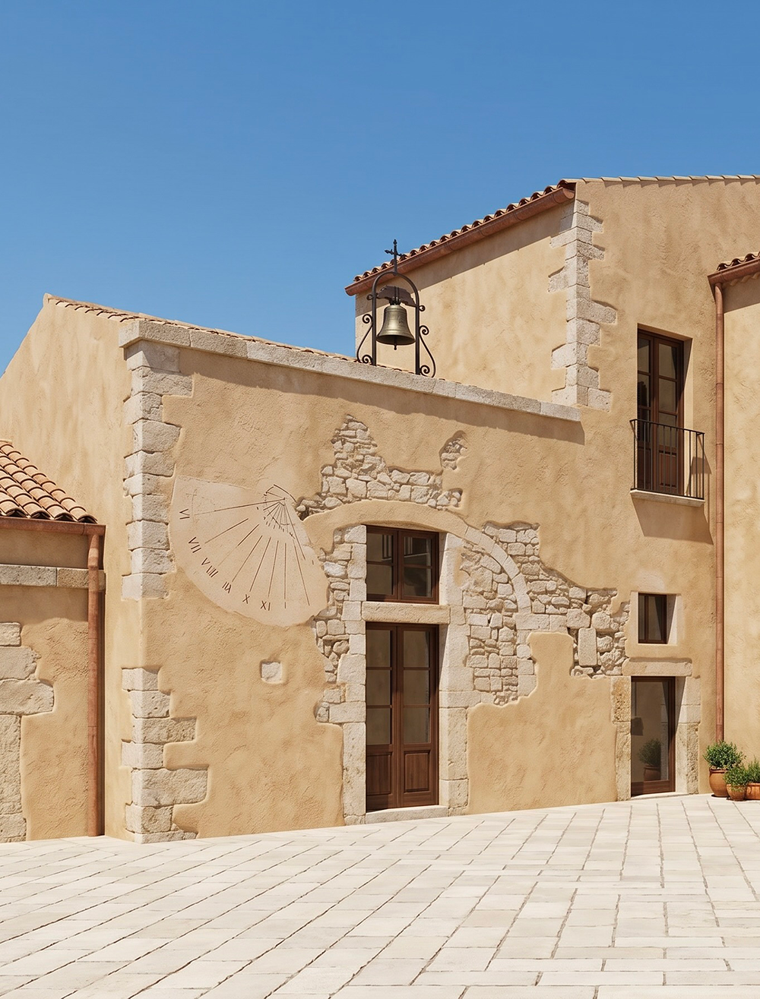

Siamo famiglie e professionisti che hanno scelto di mettere radici in Sicilia per rigenerare un antico baglio come comunità intenzionale stabile, ispirata al Sicilian Slow Living.

Scopri la nostra visione: una comunità intenzionale in cui casa, lavoro, relazioni e paesaggio formano un unico ecosistema, guidato da piccoli passi e standard elevati.
Approfondisci →
Un percorso concreto: 14 appartamenti già restaurati nel baglio storico e 20 case coloniche di prossima costruzione per una residenza stabile tutto l’anno.
Scopri le fasi →
A differenza di molti progetti basati sul turismo o su formule temporanee, Baglio San Michele si fonda su residenza stabile, selezione attenta e responsabilità condivisa.
Approfondisci →
Artigianato, scuola dei mestieri, mutua assistenza e cura della terra: scopri come questi elementi diventano parte della vita quotidiana in una comunità intenzionale.
Scopri come si vive →